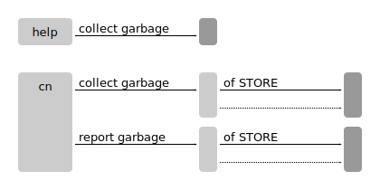

cn collect garbage [of STORE]Runs garbage collection. STORE must be a folder store. Objects not in use, and older than 1 day are removed from the store.
If no store is provided, garbage collection is run on the selected store, or the actor's storage store.
The store must not be written to while garbage collection is running. Objects booked during garbage collection may get deleted, and leave the store in a corrupt state. Reading from the store is fine.
cn report garbage [of STORE]As above, but reports obsolete objects rather than deleting them. A protocol (shell script) is written to ".garbage" in the store folder.
Syntax
